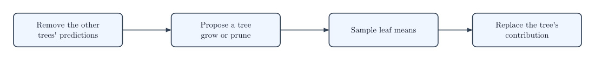
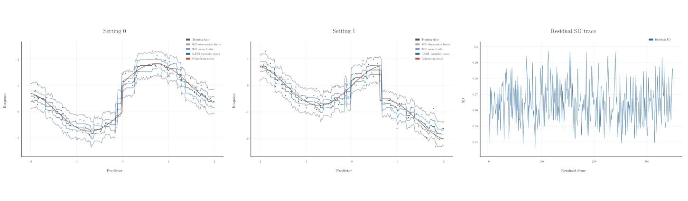

Bayesian additive regression trees for nonlinear regression
Abstract
Simulate a nonlinear response where changing a binary setting shifts the location and size of a jump. Fit a Gaussian BART ensemble to training observations, score it on an independently generated test set, and plot posterior fits and uncertainty for each setting.
From weak trees to a regression function
A BART draw contains many shallow trees, each contributing a small piecewise-constant function. During backfitting, each tree sees the response with the other trees' current contributions removed. The sampler proposes a grow or prune, integrates out the candidate leaf means for the acceptance test, and then draws new leaf means and residual variance.
#include <dm/dm.hpp>
int main() {
std::filesystem::create_directories("build");
datamunge::graphics::Diagram()
.node("residual", {0, 0}, "Remove the other\ntrees' predictions")
.node("structure", {5.5, 0}, "Propose a tree\ngrow or prune")
.node("leaves", {11, 0}, "Sample leaf means")
.node("ensemble", {16, 0}, "Replace the tree's\ncontribution")
.edge("residual", "structure")
.edge("structure", "leaves")
.edge("leaves", "ensemble")
.save_svg("build/bart_backfitting.svg");
}
Simulate, fit and predict
#include <dm/dm.hpp>
using dm::graphics::RLayout;
using dm::graphics::RPlot;
using dm::linalg::DenseMatrix;
namespace st = dm::stats;
int main() {
dm::set_seed(17);
const auto truth = [](double x, double setting) {
return 0.75 * std::sin(2.2 * x)
+ (x > (setting == 0 ? 0.0 : 0.6) ? (setting == 0 ? 1.1 : -1.3) : 0.0);
};
const auto simulate = [&](std::size_t n) {
const auto x = dm::runif(-2, 2, n);
const auto settings = dm::runif(0, 1, n);
const auto noise = dm::rnorm(0, 0.25, n);
DenseMatrix<double> predictors(n, 2);
std::vector<double> response(n);
for (std::size_t i = 0; i < n; ++i) {
predictors(i, 0) = x[i];
predictors(i, 1) = settings[i] < 0.5;
response[i] = truth(x[i], predictors(i, 1)) + noise[i];
}
return std::pair{predictors, response};
};
const auto [x, y] = simulate(240);
const auto [test_x, test_y] = simulate(160);
const st::BART model(x, y, {.num_trees = 32, .warmup = 250, .draws = 350, .max_cutpoints = 64});
const auto test_mean = model.predict(test_x);
const double baseline = dm::mean(y);
double fit_error = 0, baseline_error = 0;
for (std::size_t i = 0; i < test_y.size(); ++i) {
fit_error += std::pow(test_y[i] - test_mean[i], 2);
baseline_error += std::pow(test_y[i] - baseline, 2);
}
const auto& sigma = model.noise_sd_draws();
std::print("Held-out RMSE {:.3f}. Training-mean baseline RMSE {:.3f}.\n\n"
"Mean posterior residual SD {:.3f}. Simulated residual SD 0.250. "
"Accepted grow/prune proposals {:.1f}%.\n",
std::sqrt(fit_error / test_y.size()), std::sqrt(baseline_error / test_y.size()),
dm::mean(sigma), 100 * model.structure_acceptance_rate());
const auto grid = dm::seql(-2, 2, 180);
auto layout = RLayout::create(1, 3).size(1450, 425);
for (int setting : {0, 1}) {
DenseMatrix<double> query(grid.size(), 2);
std::vector<double> generating_mean, observed_x, observed_y;
for (std::size_t i = 0; i < grid.size(); ++i) {
query(i, 0) = grid[i];
query(i, 1) = setting;
generating_mean.push_back(truth(grid[i], setting));
}
for (std::size_t i = 0; i < y.size(); ++i)
if (x(i, 1) == setting) {
observed_x.push_back(x(i, 0));
observed_y.push_back(y[i]);
}
const auto credible = model.predict_interval(query, 0.9);
const auto predictive = model.predict_interval(query, 0.9, st::BARTPredictionTarget::NewObservation);
const dm::graphics::RGBA outer{158, 166, 176}, inner{109, 160, 206};
layout.add(RPlot::create().points(observed_x, observed_y, "Training data", {82, 82, 82}, 2)
.lines(grid, predictive.lower, "90% observation limits", outer)
.lines(grid, predictive.upper, outer)
.lines(grid, credible.lower, "90% mean limits", inner)
.lines(grid, credible.upper, inner)
.lines(grid, credible.mean, "BART posterior mean", {36, 105, 172})
.lines(grid, generating_mean, "Generating mean", {182, 83, 29})
.title("Setting " + std::to_string(setting)).x_label("Predictor").y_label("Response"));
}
std::vector<double> iteration(sigma.size());
std::iota(iteration.begin(), iteration.end(), 1.);
layout.add(RPlot::create().lines(iteration, sigma, "Residual SD", {36, 105, 172}, 1)
.abline_h(0.25).title("Residual SD trace").x_label("Retained draw").y_label("SD"));
std::filesystem::create_directories("build");
layout.save_svg("build/bart_regression.svg");
}Held-out RMSE 0.269. Training-mean baseline RMSE 0.983.
Mean posterior residual SD 0.265. Simulated residual SD 0.250. Accepted grow/prune proposals 24.1%.

Interpretation
The conditional mean intervals describe uncertainty about the regression function. The observation intervals add residual variation for a future response. The fitted curves can represent jumps and interactions because a tree can split on both predictors. The residual SD trace and acceptance fraction describe this run. These summaries alone cannot establish mixing across the tree structures. The implementation uses grow and prune moves, a finite candidate grid, and a maximum tree depth.
Reference
Chipman, George and McCulloch, BART: Bayesian additive regression trees